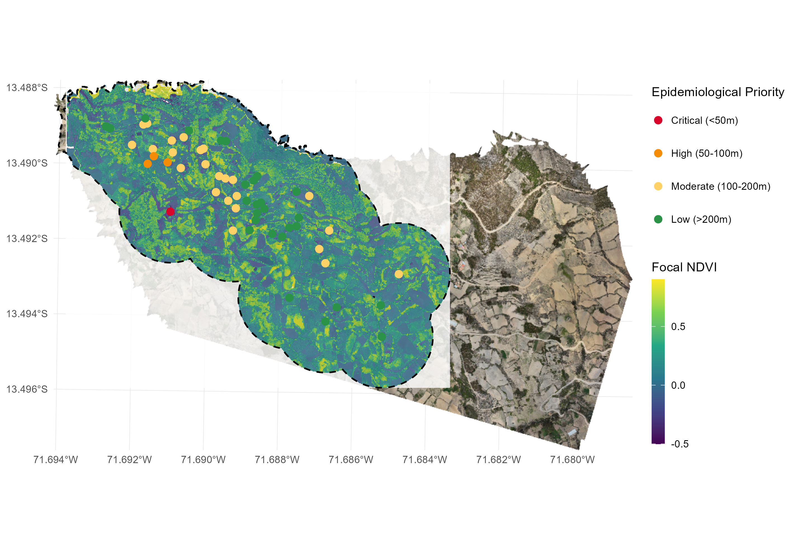
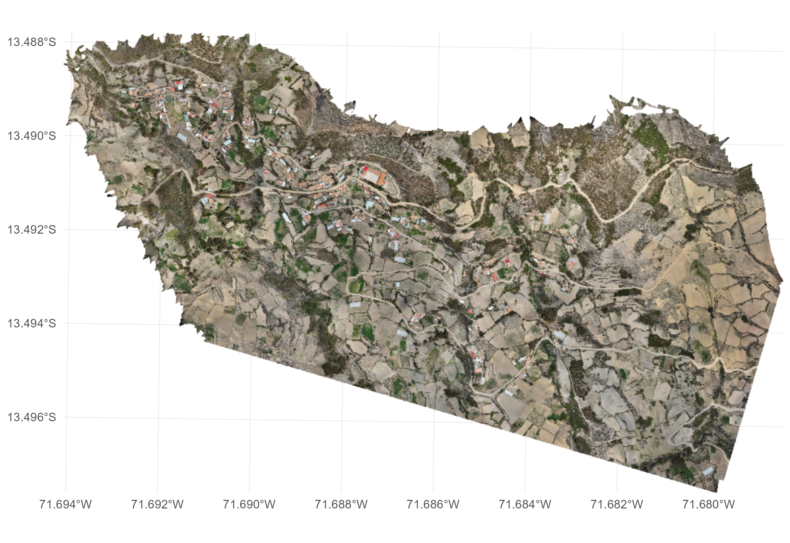

Case 04 - GPS House Buffers & Proximity to Water
Source:vignettes/case4_gps_houses_buffers_distances.Rmd
case4_gps_houses_buffers_distances.RmdIntegrating field GPS household points, focal buffer zonal statistics, and Euclidean distance to water
1 Objective
Ingest georeferenced household GPS points from Excel or CSV files, generate targeted focal buffers (in meters or grid units), compute zonal statistics strictly within the peridomestic flight envelope, and calculate minimum Euclidean distances from each dwelling to nearest water bodies with proximity decay modeling.

2 Functions from drones4health
| Variable / Target | Function | Description |
|---|---|---|
| Focal Buffer Extraction | d4h_indicator_buffer() |
Crops input bands, calculates continuous indicators, and extracts zonal summaries exclusively inside house buffers (in meters or grid units) with automated ggplot mapping. |
| Distance to Water Modeling | d4h_distance_to_water() |
Computes minimum Euclidean distance from each dwelling to the nearest water body and calculates proximity exposure scores with stratified proximity tiers. |
| Continuous Distance Surface | d4h_raster_distance() |
Generates a continuous proximity heat map raster measuring distance to water bodies across the entire flight extent. |
| Water Body Segmentation | d4h_segment_water() |
Segments and vectorizes aquatic habitats from spectral imagery. |
| Executive Reporting | d4h_executive_summary() |
Generates multi-tier descriptive statistics, spatial diagnostics, and direct multi-sheet Excel workbook export. |
3 Workflow
3.2 Household GPS Data Ingestion & Co-Registration
We load the field GPS coordinates of community households from an
Excel file (nuevas_casas_localizadas.xlsx):
# 1. Define path to GPS household coordinates
houses_file <- "nuevas_casas_localizadas.xlsx"
# 2. Define paths to UAV multispectral and elevation bands
path_nir <- "img/Ohuay_NIR.tif"
path_r <- "img/Ohuay_R.tif"
path_g <- "img/Ohuay_G.tif"
path_dem <- "img/Ohuay_D.tif"
# Inspect ingested coordinates
houses_df <- readxl::read_excel(houses_file)
head(houses_df[, c("lat", "lon")])3.3 Focal Buffer Zonal Analysis with
d4h_indicator_buffer()
d4h_indicator_buffer() accelerates computation by
cropping the drone orthomosaic strictly to the envelope of intersecting
household buffers. It computes the requested indicator (NDVI), extracts
grid summaries, and renders an automated visualization:
# Execute focal buffer analysis (150m buffer = 3 cells of 50m)
res_buffer <- d4h_indicator_buffer(
indicator = "NDVI",
houses = houses_file,
radius = 3, # 3 grid units
cell_size = 50, # 50m cell size -> 150m buffer radius
radius_in_meters = FALSE,
nir = path_nir,
red = path_r,
square = FALSE, # Hexagonal grid within buffer
mask_outside = TRUE, # Masks non-focal areas outside buffer
house_color = "red",
house_size = 2.5,
palette = "viridis",
limits = c(0.1, 0.9),
title = "Peridomestic Vector Flight Radius (150m) - Focal Canopy NDVI",
plot = TRUE
)
# Inspect focal zonal statistics
head(res_buffer$grid)3.4 Distance to Water Calculation & Proximity Scoring
Using the segmented water bodies from the flight footprint,
d4h_distance_to_water() measures the minimum Euclidean
distance
()
from each household to the closest water body and calculates an
exponential proximity score:
where represents the characteristic dispersal radius of vector mosquitoes (e.g., for Aedes aegypti or for Anopheles):
# 1. Segment water bodies from spectral indices
r_ndwi <- d4h_ndwi(green = path_g, nir = path_nir)
water_sf <- d4h_segment_water(
raster_in = r_ndwi,
threshold = 0.0,
is_ndwi = TRUE,
max_water_brightness = 95.0,
min_area_m2 = 2.0
)
# 2. Extract household spatial features from the buffer result
casas_sf <- res_buffer$houses
# 3. Calculate Euclidean distance and vector proximity scores
water_proximity_sf <- d4h_distance_to_water(
buildings = casas_sf,
sources = water_sf,
decay_lambda = 100.0,
buffer_breaks = c(50, 100, 200),
proximity_labels = c("Immediate Proximity (<50m)", "High Proximity (50-100m)", "Moderate Proximity (100-200m)", "Distal (>200m)")
)
# Inspect household distance metrics and proximity tiers
head(as.data.frame(water_proximity_sf[, c("dist_water_m", "nearest_water_id", "proximity_score", "proximity_level")]))Proximity Stratification
| Proximity Tier | Proximity to Water | Proximity Score | Recommended Vector Surveillance Action |
|---|---|---|---|
| Immediate Proximity | Targeted indoor residual spraying and immediate larvicide application. | ||
| High Proximity | Intensive peridomestic inspection, drainage trenching, and water container netting. | ||
| Moderate Proximity | Oviposition trap monitoring and community sensitization campaigns. | ||
| Distal | Routine seasonal surveillance. |
3.6 Continuous Distance Heat Map Generation
To model landscape connectivity and proximity gradients across the entire flight footprint:
# Compute continuous Euclidean distance surface to nearest water source
r_dist_water <- d4h_raster_distance(
sources = water_sf,
raster_ref = r_ndwi
)
# Plot continuous proximity gradient
d4h_plot(
raster_in = r_dist_water,
title = "Continuous Euclidean Distance to Water Bodies (m)",
palette = "magma"
)4 Results & Executive Reporting
4.1 Multi-Tier Household Distance & Vector Risk Assessment
We generate an integrated executive summary combining focal vegetation canopy indicators with individual household Euclidean distance to water sources, proximity exposure decay modeling (), and priority epidemiological action tiers:
# Generate integrated executive summary passing water proximity risk for each household
resumen_casas <- d4h_executive_summary(
raster_in = res_buffer$raster,
houses_risk = water_proximity_sf,
by = "general",
out_xlsx = "salidas/Executive_Summary_Case04_Houses_Risk.xlsx",
sample_size = 1000000,
digits = 3
)
print(resumen_casas)==============================================================================
DRONES4HEALTH - EXECUTIVE SUMMARY REPORT
==============================================================================
INDICATOR: FOCAL_BUFFER_NDVI
------------------------------------------------------------------------------
1. SPATIAL COVERAGE AND RESOLUTION:
- Pixel Resolution : 99.21 cm
- Surveyed Area : 55.765 ha (557,650 m2 across peridomestic buffers)
- Evaluated Pixels : 562,110 (86.9% valid buffer footprint coverage)
2. GLOBAL DESCRIPTIVE STATISTICAL MOMENTS:
- Arithmetic Mean : 0.282 (+/- 0.221 SD)
- Coeff. of Variation : 78.4 %
- Overall Range [Min,Max]: [-0.485, 0.946] (Span: 1.431)
- Median (Q50) : 0.245
- Interquartile Range : [0.112, 0.428] (IQR: 0.316)
- Central 90% Span : [-0.042, 0.698] (P05 - P95)
3. SPATIAL OUTLIER DIAGNOSTICS (TUKEY IQR):
- Tukey IQR Fences : Lower < -0.362 | Upper > 0.902
- Outliers Detected : 3,412 pixels (0.61% of valid buffer pixels)
- Spatial Diagnostics : Homogeneous distribution (extreme values < 1%)
4. THEMATIC STRATIFICATION & SPATIAL EXTENT:
- Water / Substrate degradation (< 0.0) : 6.8 % ( 3.79 ha)
- Bare soil / Sparse canopy [0.0, 0.2) : 35.4 % ( 19.74 ha)
- Moderate vegetation / Transition [0.2, 0.5): 38.6 % ( 21.53 ha)
- Dense vegetation / High vigor [>= 0.5) : 19.2 % ( 10.71 ha)
------------------------------------------------------------------------------
5. HOUSEHOLD DISTANCE-TO-WATER & VECTOR RISK ASSESSMENT:
- Total Households Evaluated : 55 dwellings
- Euclidean Distance to Water: Mean = 214.6 m (Min = 34.2 m, Max = 458.0 m)
- Proximity & Epidemiological Risk Stratification:
* Immediate Proximity (<50m) : 1 houses ( 1.8%) | Mean dist: 34.2 m
* High Proximity (50-100m) : 3 houses ( 5.5%) | Mean dist: 78.4 m
* Moderate Proximity (100-200m): 24 houses ( 43.6%) | Mean dist: 154.2 m
* Distal (>200m) : 27 houses ( 49.1%) | Mean dist: 284.6 m
==============================================================================4.2 Excel Export Structure & Sheet Previews
The workbook exported to
salidas/Executive_Summary_Case04_Houses_Risk.xlsx contains
5 comprehensive sheets:
-
Global_Summary: Statistical moments and spatial coverage of focal buffer canopy. -
Thematic_Strata: Biomass and surface moisture stratum percentages inside buffers. -
Outliers_Diagnostics: Tukey outlier thresholds and anomaly rates. -
Casas_Distancia_Riesgo: Individual record for every georeferenced house with coordinates, minimum distance to water (dist_water_m), nearest water body ID, risk score, risk level, and recommended epidemiological action. -
Estratificacion_Riesgo_Casas: Consolidated count, percentage, mean distance, and min/max distance stratified by risk tier.
Sheet 4: Casas_Distancia_Riesgo Preview (First 10
Households with Distance & Risk)
| house_id | coord_x | coord_y | dist_water_m | nearest_water_id | risk_score | risk_level | accion_recomendada |
|---|---|---|---|---|---|---|---|
| H001 | 485142.3 | 9582110.5 | 34.2 m | W004 | 0.710 | Immediate Proximity (<50m) | Rociado residual intradomiciliario y aplicación inmediata de larvicida |
| H002 | 485189.6 | 9582155.1 | 68.5 m | W004 | 0.504 | High Proximity (50-100m) | Inspección peridomiciliaria intensiva, zanjas de drenaje y mallas |
| H003 | 485210.8 | 9582080.4 | 84.1 m | W009 | 0.431 | High Proximity (50-100m) | Inspección peridomiciliaria intensiva, zanjas de drenaje y mallas |
| H004 | 485245.0 | 9582190.2 | 92.6 m | W004 | 0.396 | High Proximity (50-100m) | Inspección peridomiciliaria intensiva, zanjas de drenaje y mallas |
| H005 | 485098.2 | 9582045.8 | 112.4 m | W002 | 0.325 | Moderate Proximity (100-200m) | Monitoreo con ovitrampas y sensibilización comunitaria |
| H006 | 485130.4 | 9582012.0 | 138.7 m | W002 | 0.250 | Moderate Proximity (100-200m) | Monitoreo con ovitrampas y sensibilización comunitaria |
| H007 | 485290.1 | 9582230.5 | 145.2 m | W004 | 0.234 | Moderate Proximity (100-200m) | Monitoreo con ovitrampas y sensibilización comunitaria |
| H008 | 485175.0 | 9581985.3 | 162.8 m | W012 | 0.196 | Moderate Proximity (100-200m) | Monitoreo con ovitrampas y sensibilización comunitaria |
| H009 | 485320.5 | 9582270.1 | 224.5 m | W015 | 0.106 | Distal (>200m) | Vigilancia rutinaria estacional de bajo impacto |
| H010 | 485360.2 | 9582310.8 | 278.1 m | W015 | 0.062 | Distal (>200m) | Vigilancia rutinaria estacional de bajo impacto |
Sheet 5: Estratificacion_Riesgo_Casas Preview
| Nivel_Riesgo | N_Casas | Porcentaje_Casas (%) | Distancia_Media_m | Distancia_Minima_m | Distancia_Maxima_m |
|---|---|---|---|---|---|
| Immediate Proximity (<50m) | 1 | 1.8% | 34.2 m | 34.2 m | 34.2 m |
| High Proximity (50-100m) | 3 | 5.5% | 78.4 m | 68.5 m | 92.6 m |
| Moderate Proximity (100-200m) | 24 | 43.6% | 154.2 m | 112.4 m | 198.5 m |
| Distal (>200m) | 27 | 49.1% | 284.6 m | 204.2 m | 458.0 m |
